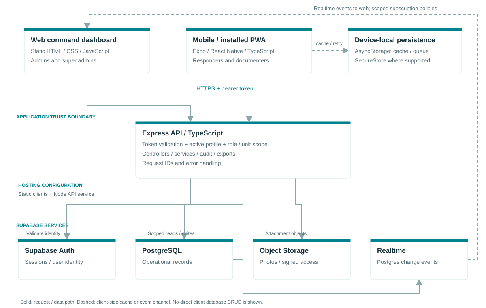
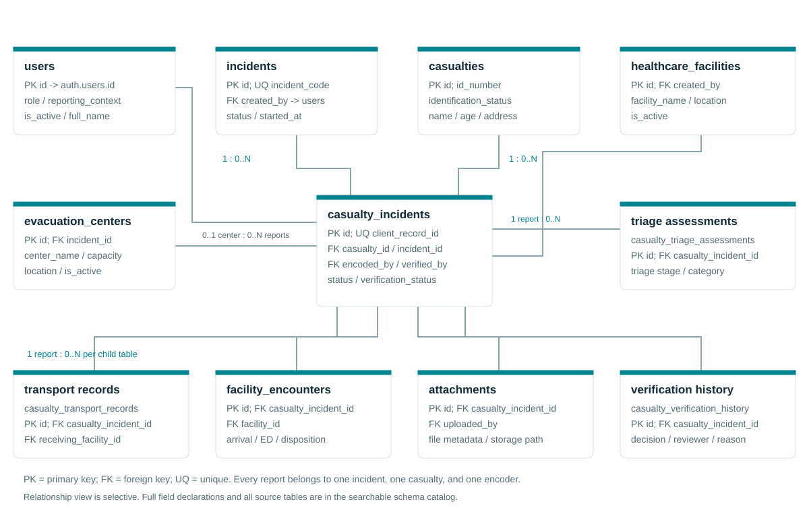

Field & facility teams
Expo / React Native / PWA, role-aware forms, cached incidents, attachments, and a local retry queue.
DISASTER CASUALTY MANAGEMENT SYSTEM
Architecture, data relationships, and a connected web and mobile experience for the existing UP Manila project.
Design prototype · Synthetic demonstration data · Changes last for this tab session · Architecture awaiting stakeholder approval
SYSTEM BLUEPRINT

Expo / React Native / PWA, role-aware forms, cached incidents, attachments, and a local retry queue.
Static HTML / CSS / JavaScript for incident setup, review, analytics, facilities, exports, and account administration.
Express / TypeScript validates tokens and applies scope checks. Supabase provides Auth, Postgres, Storage, and Realtime.
Source: api/src/app.ts, api/src/middleware/auth.ts, website/app.js, mobile/src/offline/casualtyQueue.ts. Hosting boxes describe the repository configuration, not a verified live deployment.
RELATIONAL MODEL

Fields are the union of CREATE TABLE and ADD COLUMN declarations in the reviewed SQL files; later drops, renames, type changes and migration ordering are not inferred. Open a table for exact source statements.
Download read-only database inspection queries ↗INTERACTIVE FRONTEND DESIGN
Open web wireframe SVG ↗ / Open mobile wireframes SVG ↗
Try: select Mobile → Add casualty → turn Offline on → save → open Records → reconnect → Sync all → select Web → Verification → review and approve. Triage labels are illustrative, selected by the user, and do not provide clinical recommendations.
REVIEW & ACCEPTANCE
Confirm client responsibilities, API trust boundary, deployment ownership, and the offline / realtime data paths.
Confirm the live schema, role constraints, identifiers, retention rules, migration order, and server-enforced visibility.
Walk through entry, queue recovery, record detail, verification, rejection feedback, and narrow-screen navigation.
Reviewer: ____________________ Role: ____________________
Decision: Approve / Approve with changes / Revise Date: ____________________
A downloaded or viewed package does not constitute approval. Record the actual reviewer decision in your project process.